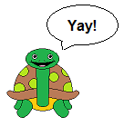

What's a program?
A program is a set of instructions that a computer follows to do something. A program can
get you onto the internet, help you create pictures, or help you write down your thoughts so
you can save them later. Programs are what make computers so useful!
How do I create one?
There are many different ways to tell a computer what to do, but the most common is with
a programming language. There are lots and lots of languages out there, each with their
own strengths and weaknesses. Today, we are going to be working with a programming language
called python. Python is a powerful language that will allow you to create fun programs
before you know it!
But how do I do it?

With the python programming we can tell turtle what to do! First, we need to understand
that python needs to know that we want to talk to turtle, and not someone else - so we need
to write some 'code' to do that. With this 'code' we can make turtle do whatever we want!
How do I tell turtle to move?
We can give turtle commands such as forward, backward, right, and left. We need to tell
turtle how far we want him to go. Turtle doesn't understand feet, inches, or meters, he
only understands turtle units! let's give it a try, click the 'go' button below to give
turtle some commands: